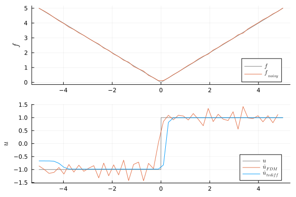
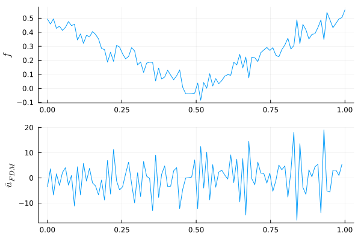
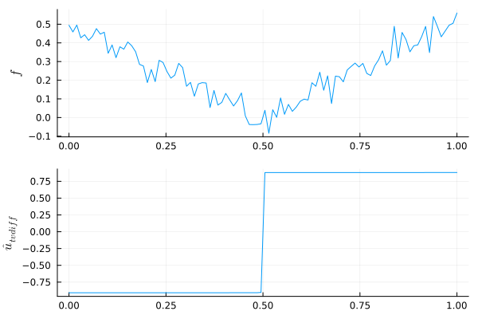

Examples
Simple example
First we generate a small dataset by adding uniform noise to $f(x)=|x|$
using Random, Distributions
n = 50
x = range(-5, 5, length=n)
dx = x[2] - x[1]
f_noisy = abs.(x) + rand(Uniform(-0.05, 0.05), n)then we call tvdiff using a regularization parameter of α=0.2 for 100 iterations.
using NoiseRobustDifferentiation
û = tvdiff(f_noisy, 100, 0.2, dx=dx)We compare the results to the true derivative $u(x)=sign(x)$ and a naive implementation of finite differences.
û_FDM = diff(f_noisy) / dx # FDM
Examples from paper
Let's reconstruct the figures from Rick Chartrand's paper "Numerical differentiation of noisy, non-smooth data".
The corresponding datasets can be found under /docs/data.
Small-scale example
The small-scale example in the paper is a more noisy variant of our first example. We start by loading the data.
using NoiseRobustDifferentiation
using CSV, DataFrames
file = CSV.File("../data/demo_small.csv")
df = DataFrame(file)
data = df.noisyabsdataApplying finite differences leads to a noisy and inaccurate result that amplifies the noise:

A strongly regularized result is obtained by calling tvdiff with α=0.2.
û = tvdiff(data, 500, 0.2, scale="small", dx=0.01, ε=1e-6)
Because of keyword argument defaults, this is equal to calling
û = tvdiff(data, 500, 0.2)A better result is obtained after 7000 iterations, though differences are minimal.
û = tvdiff(data, 7000, 0.2)
Large-scale example
The data in this example was obtained from a whole-room calorimeter.
using NoiseRobustDifferentiation
using CSV, DataFrames
file = CSV.File("../data/demo_large.csv")
df = DataFrame(file)
data = df.largescaledataComputing derivates using naive finite differences gives a useless result:
Using tvdiff with ε=1e-9, we obtain a strongly regularized result. Larger values of $\varepsilon$ improve conditioning and speed, while smaller values give more accurate results with sharper jumps.
û = tvdiff(data, 40, 1e-1, scale="large", precond="amg_rs", ε=1e-9)Therefore raising $\varepsilon$ to 1e-7 gives a smoother result. However, jumps in the derivative are also smoothed away.
û = tvdiff(data, 40, 1e-1, scale="large", precond="amg_rs", ε=1e-7)